Installation, performance and moving image. Since 2018 the work has circled one question: what happens to an image once it is handed to something that will change it.
Relations关系系列
2023 · transfer print on mirror-finish rippled steel; installation
Paintings 130 × 121 cm · installation 100 × 100 × 100 cm
MFA graduation exhibition, Tianjin Academy of Fine Arts
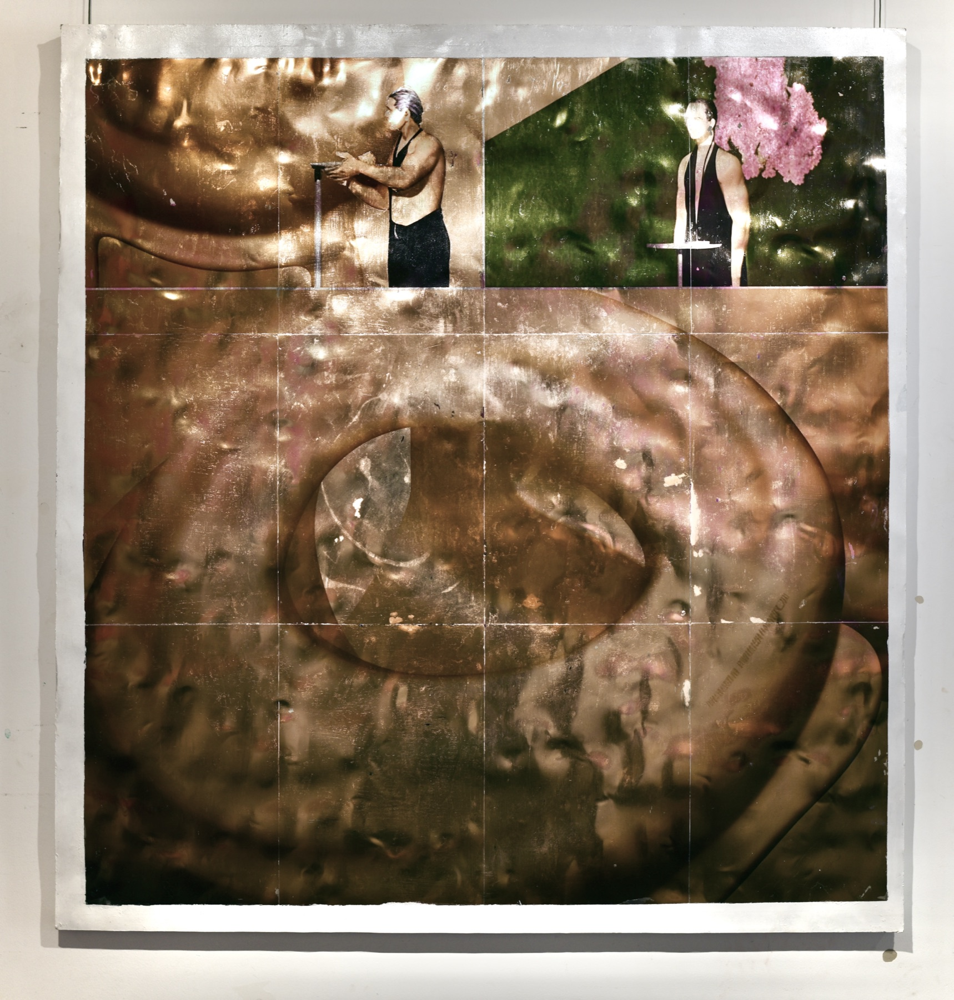
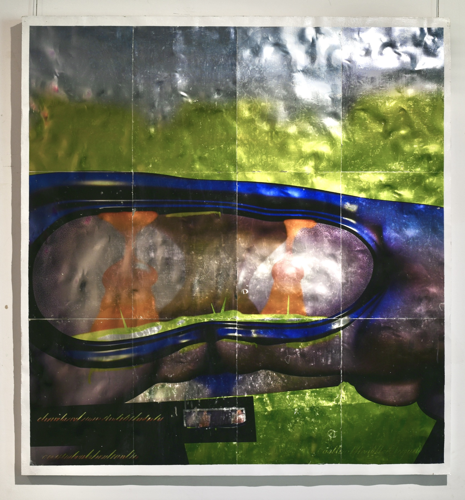
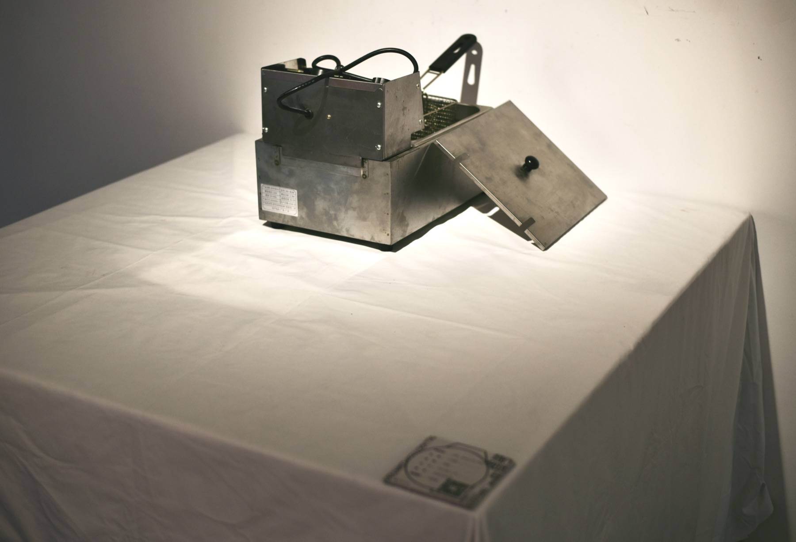
The images are transferred onto mirror-finish rippled steel, chosen for the metallic coldness of the electronic image itself. The ripple keeps any picture from settling: the surface returns the room, and the viewer, into every reading of it. From the statement, written in 2023: “As AI-generated painting arrives and images are produced in frenzied quantity, the future and essence of painting become all the more worth discussing.”
The Sadness Hidden in Small Things被隐藏在细小事物中的悲伤
2021 · treadmill, steel table, timber railway sleeper · dimensions variable The Moon Shines Bright Among the Sparse Stars, four-person exhibition, 19 Nov – 2 Dec 2021
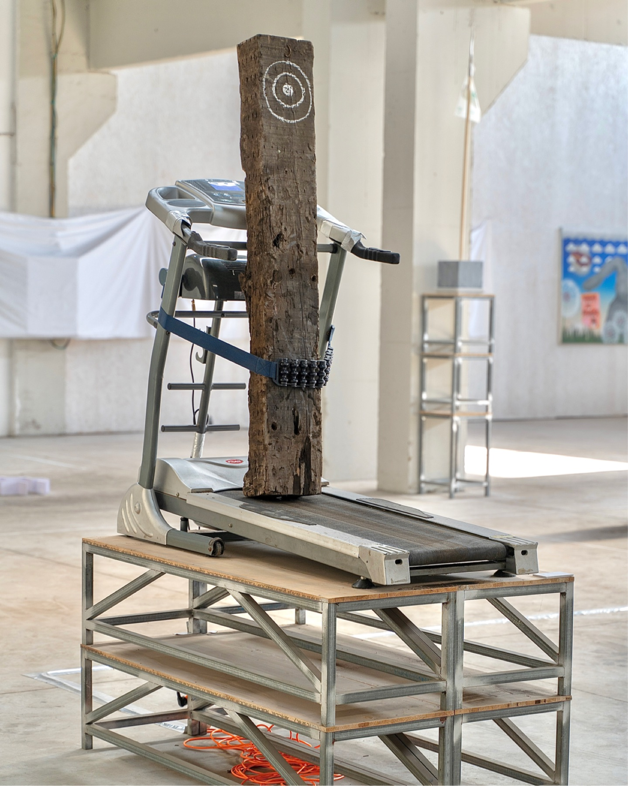
A treadmill runs against a timber railway sleeper. The machine built to go nowhere wears the wood away over the length of the exhibition. From its label: “the worn tree is a small thing, and the sadness is hidden inside it.”
Aixian River爱贤道
16 December 2020, 20:00–20:30 · night projection · 12′02″
Rd. Aixian, Tianjin · RIVER STUDIO, School of Experimental Art, TJAFA
With Zhao Yang, Hu Qiongfang and Shu Ziyi · adviser Wang Shuai
On site, 16 December 2020 (excerpt from the 12′02″ projection)
Source layout across three shuttersOne of the projected games
Arcade games projected onto the closed roller shutters of a row of art-supply shops after the street had shut for the night. A public screen made of other people’s shopfronts, running thirty minutes, leaving nothing on the metal.
A Prayer That the Fragrance of Health May Ever Spill Through Your Breast祈愿健康的香气时时散溢在你胸中的坚强思想
2021 · black cementitious material, polyethylene, ABS eco-resin, foaming solution 300 × 300 × 150 cm, dimensions variable (unit 20 × 20 × 150 cm) Collective work of 密云一支 (Miyun Yizhi): Feng Tai, Tang Shanshan, Wang Wanting, Yang Zile, Haorui Yu Epoch / ЭПОХА, International Arts Fund, Moscow, online, 1 Jun – 15 Jul 2022 · ART100 Chronology, 2022, with catalogue · restaged, TJAFA MFA graduation exhibition, June 2023
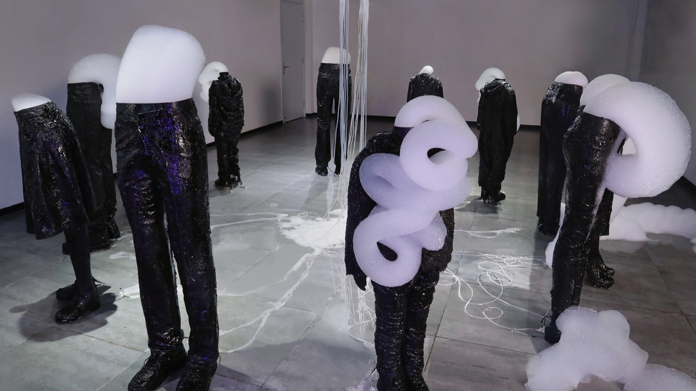
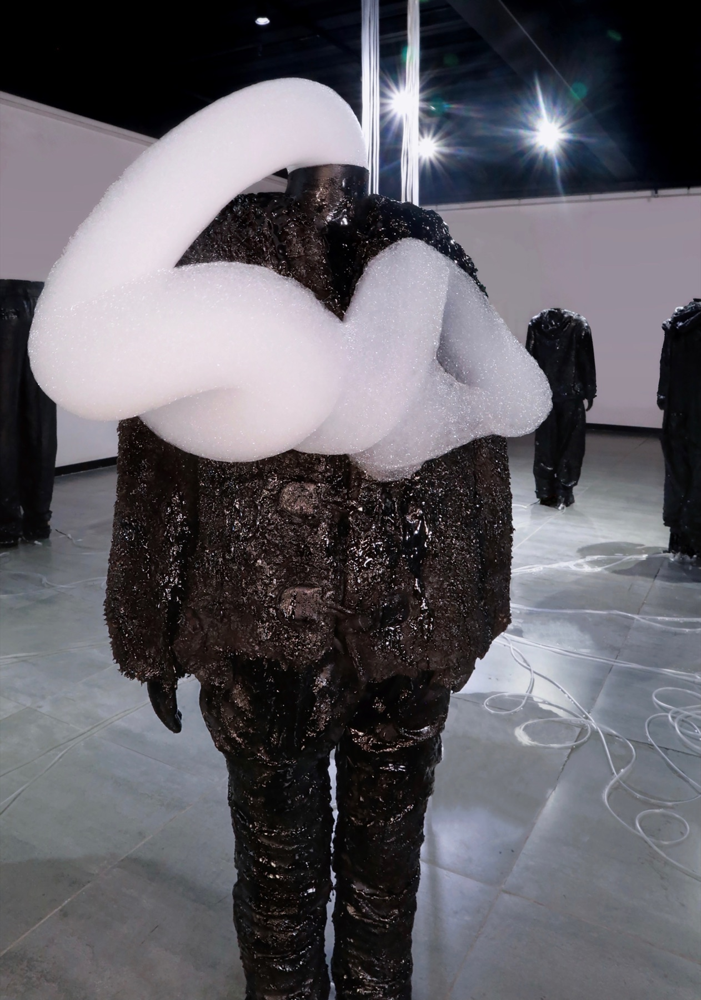
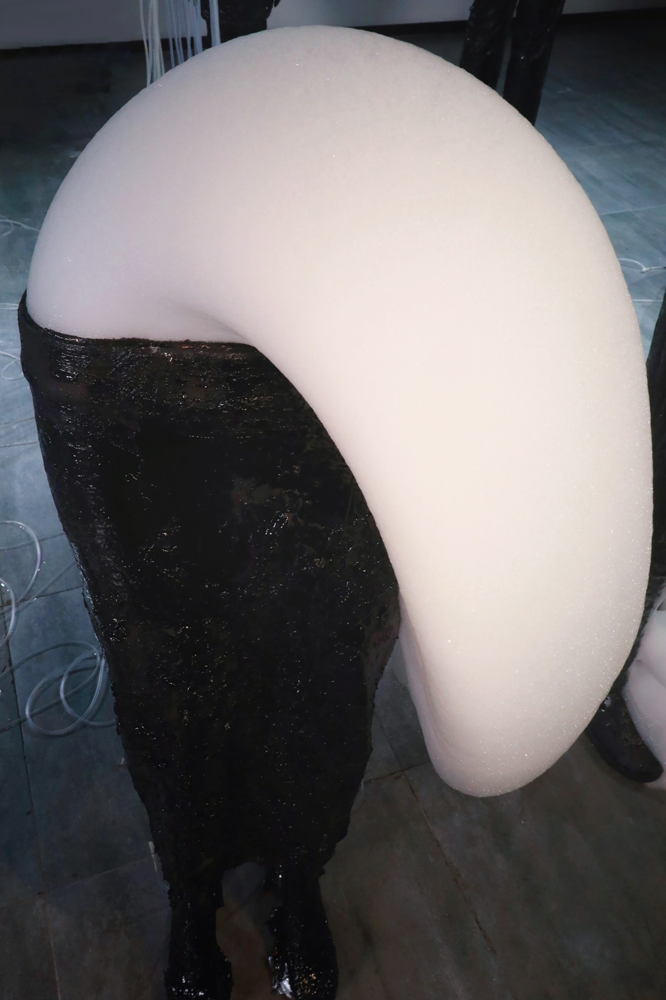
2023 restaging, on site
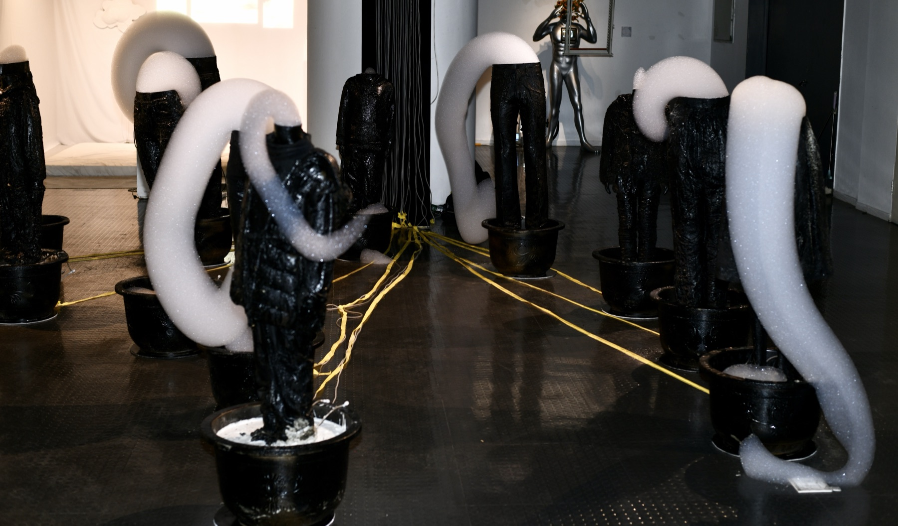
Columns that consume themselves as they stand. Shown twice, two years apart, in different rooms and different states of decay.
For a Moment the Lie Becomes Truth
2021 · performance and installation · dimensions variable
Bow, arrows, spray paint, model dove, balloon shark, video
With Yang Zile The Moon Shines Bright Among the Sparse Stars, 19 Nov – 2 Dec 2021
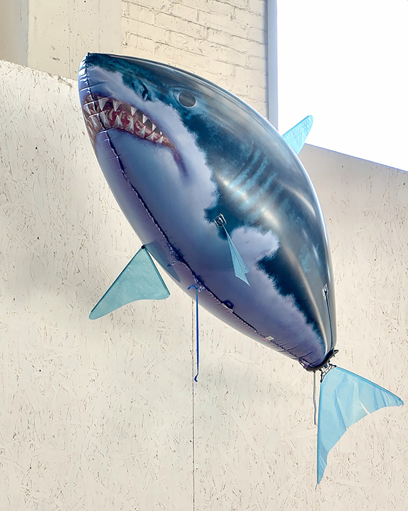
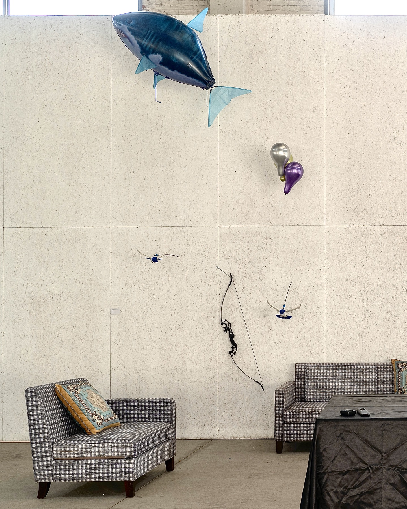
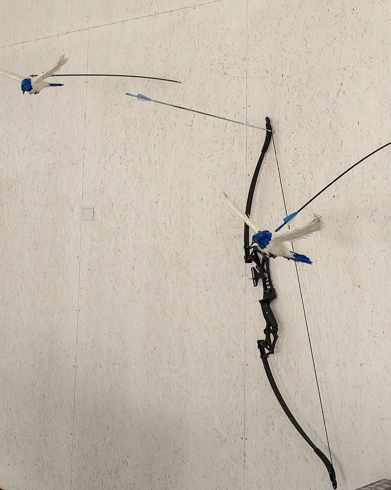
Nourished by the Fountain被喷泉滋养
2022 · aluminium vessel, pump, nozzle, plant, clear water
h. 1.2 m × l. approx. 3 m
Proposal — never realised
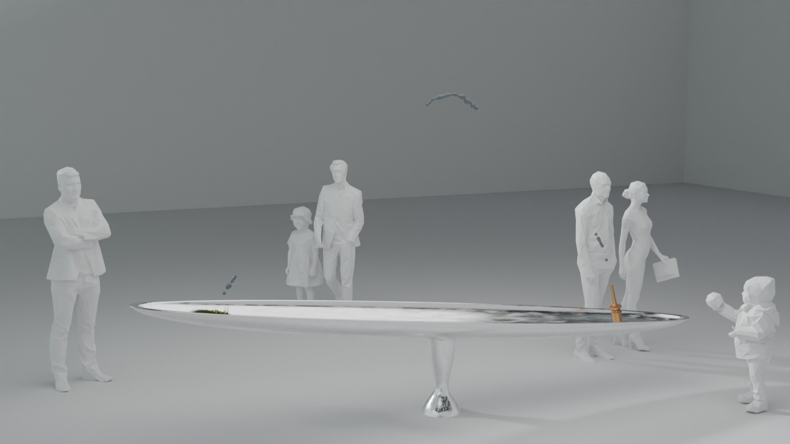
A closed irrigation loop in which the falling water level is the only readout of whether the plant is still alive. Shown here as the original visualisation; the work was never built.